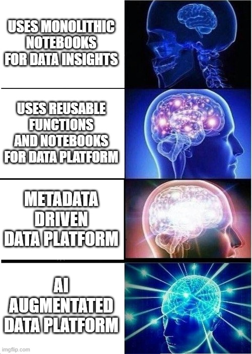

I Don’t Want My Career to DIE (So should I consider myself a Data Intelligence Engineer)?
I work with Simon’s Company Advancing Analytics building both Data Platforms and Generative AI Solutions. I’ve called that work Architecting Intelligent Data Solutions for years but you can call it what you want.
None of what I have written here has been discussed or vetted by them. These are my opinions that I wanted to share.
This was generated with the help of AI based on my research and input. See my post on Transparency: AI Content Labels
Are you more worried that AI will make your job obsolete, or that your teams will adopt it without thinking about the security risks?
At SQLBITS 2025, the contrast between my session and Simon’s could not have been more stark. I presented “Danger In Dialogue: The Security Risks in LLMs”, where I focused on how people are not taking the security part of this new technology seriously enough. Simon, on the other hand, gave a talk all about Automating Engineering with AI. To which he received lots of criticism from the data engineering community. On the surface, our messages seem opposed. But we both agree on the core point: you have to get ahead of the game. Because other people already are.
This isn’t just a topic for a conference talk. I have been using ChatGPT since its first day. I’ve become a very adept prompt engineer and see significant productivity gains in my personal and professional life from these models. AI augmentation of our daily workflows is the future, and its strengths in pattern recognition, code generation, and summarizing information are obvious. The real question is how we integrate it effectively.
The Engineering Evolution: From Stored Procedures to Accelerators
To understand where we’re going, we need to look at where we’ve been. Many data teams started with deeply coupled, procedural platforms. Think of massive SQL stored procedures that contained all the business logic for an entire company. They were (often, not always) difficult to test, maintain, and scale.
Then, we moved to cloud data platforms like Databricks. This shift introduced notebooks and encouraged teams to build reusable functions and, eventually proper internal frameworks. It was a certainly an improvement for most.
There’s lot of context I’m missing here I know. The Data Warehouse architecture battles, Vendor Wars, Hadoop, Sqoop, Azure Data Lake Analytics. Early Orchstrators such as SSIS, ADFv1 and more. It doesn’t add value to the point I’m making, so I’m simplifying the timeline.
The more recent trend was building solution or platform accelerators. These tools focus on enabling data engineers and scientists to do their best work by abstracting away boilerplate code. The idea is sound: let engineers focus on the business context and problem-solving, not rewriting the same data-loading script for the hundredth time. This is often achieved through Configuration-as-Code (CaC), where you define your pipelines in a structured format like YAML, JSON or SQL Tables.
The Accelerator Anti-Pattern: A Cautionary Tale
There are good solution accelerators out there. I’ve seen them. But I have also seen many terrible ones. The challenge appears when a well-intentioned framework follows the “everything is configuration” anti-pattern.
This occurs when a configuration-driven framework becomes so complex and prescriptive that it is no longer a simple configuration file. Instead, it becomes a new, poorly designed Domain Specific Language (DSL). Engineers don’t write Python or SQL; they write a proprietary, limited version of it defined in YAML.
I remember delivering a time critical project using one of the first data platform Solution Accelerator out there. It generated boilerplate notebooks for you using metadata and I spent more time (2 days) debugging the undocumented C# Blazor app than actually doing the work.
When this happens, you lose on all fronts. Good engineers lose their ability to work at speed because the framework fights them at every turn. They can no longer apply well-engineered solutions because they are stuck inside a rigid, inefficient box. Bad engineers lose their exposure to other architectural models, stunting their growth and preventing them from developing better skills.
From Brain Rot to Augmented Coding
This brings us to AI engineering and thinking. When I hear objections about AI causing “brain rot,” citing studies like “Your Brain on ChatGPT,” I see the same pattern. Btw that papers FAQ specifically says not to do that! The problem isn’t the tool; it’s how you use it. You would be a fool to not use every tool at your disposal to better achieve outcomes. The key is to be the master of the tool, not the other way around.
Kent Beck, the influential software engineer and a creator of Extreme Programming, perfectly captures this distinction. He draws a line between the “vibe coder” and the “augmented coder.” This directly mirrors Simon’s point about “Vibe Engineering” creating messes that will need to be cleaned up later.
Here’s how Beck explains it:
In vibe coding you don’t care about the code, just the behavior of the system. If there’s an error, you feed it back into the genie in hopes of a good enough fix. In augmented coding you care about the code, its complexity, the tests, & their coverage. The value system in augmented coding is similar to hand coding–tidy code that works. It’s just that I don’t type much of that code.
The “vibe coder” is the bad engineer, made worse by a powerful tool they don’t understand. The “augmented coder” is the good engineer, made more productive by that same tool. They use it to generate code but apply the same rigorous standards for quality, testing, and maintainability as if they had written it by hand. My personal challenges with the “SLOP” that LLMs can produce don’t stop me from using them; it just forces me to be an augmented coder.

Of course, this transition isn’t without friction. As Birgitta Böckeler, a Distinguished Engineer at Thoughtworks, points out, we have to accept that we will take on technical debt while we learn how to best apply these new tools. It’s an unavoidable part of innovation.
The Path Forward, is it the Data Intelligence Engineer?
The challenge, then, is to be intentional. We must strive to be augmented coders while managing the technical debt we accrue. The solution to these risks is the same as the solution to the security points I made in my SQLBITS talk. We need a combination of three things:
- Strategy: Clear guidelines on expectations, accountability and governance.
- Education: Training engineers to be augmented coders, not vibe coders. This means teaching them how to prompt effectively, spot bad output, and understand limitations. Also ensuring they still learn via first principals and develop understanding of their field i.e. design patterns or kimball modelling.
- Awareness: A constant conversation about what works, what doesn’t, and how to apply these systems responsibly.
These are the tools that will allow us to truly benefit from LLMs. They are what will let us become what Simon calls the “Data Intelligence Engineer.” It’s a title that captures the shift from just building pipelines to integrating intelligent systems into our work.
Personally, I’d probably label it “AI Augmented Data Engineering.” But my AI marketing agent suggests I should rebrand as a “Generative Intelligence Architect.” I’ll think about it.